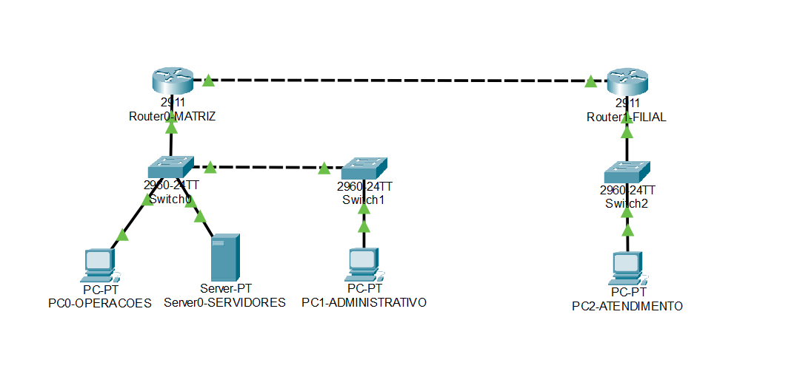
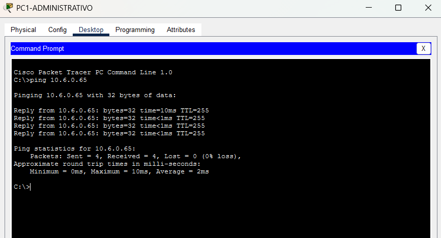
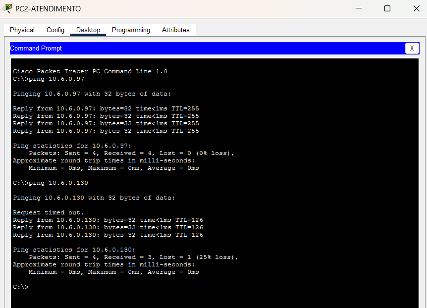

Aura Capital.
Como interligar duas unidades de uma fintech para que a equipe de atendimento acesse os sistemas da matriz?
O cliente.
A Aura Capital é a fintech do projeto Enterprise Connect. Sua missão é simplificar pagamentos e a gestão financeira de pessoas e pequenos negócios por meio de soluções digitais.
A matriz concentra Operações, Administrativo e Servidores. A filial atende clientes. A ANI recebeu o desafio de separar o tráfego dos setores, preservar o acesso aos serviços internos e prever capacidade para crescimento.
Planejamento da rede.
Na matriz, 30 pessoas trabalham em Operações e 14 no Administrativo. A filial reúne 18 profissionais de Atendimento que precisam consultar a aplicação hospedada na matriz.
Como os setores foram separados
O plano reserva uma VLAN para cada função. No Administrativo, por exemplo, 14 PCs, três impressoras e um gateway ocupam 18 endereços. Em Operações, os 30 PCs e o gateway exigem um bloco /26, com 62 endereços úteis.
Abrir plano VLSM completo
| VLAN / enlace | Sub-rede | Máscara | Gateway | Faixa de dispositivos | Broadcast | Uso / úteis |
|---|---|---|---|---|---|---|
| 10 · Operações | 10.6.0.0/26 | 255.255.255.192 | 10.6.0.1 | 10.6.0.2 – 10.6.0.62 | 10.6.0.63 | 31/62 |
| 20 · Administrativo | 10.6.0.64/27 | 255.255.255.224 | 10.6.0.65 | 10.6.0.66 – 10.6.0.94 | 10.6.0.95 | 18/30 |
| 40 · Atendimento | 10.6.0.96/27 | 255.255.255.224 | 10.6.0.97 | 10.6.0.98 – 10.6.0.126 | 10.6.0.127 | 21/30 |
| 30 · Servidores | 10.6.0.128/28 | 255.255.255.240 | 10.6.0.129 | 10.6.0.130 – 10.6.0.142 | 10.6.0.143 | 7/14 |
| 50 · Wi-Fi corporativo | 10.6.0.144/28 | 255.255.255.240 | 10.6.0.145 | 10.6.0.146 – 10.6.0.158 | 10.6.0.159 | 11/14 |
| 60 · Visitantes matriz | 10.6.0.160/28 | 255.255.255.240 | 10.6.0.161 | 10.6.0.162 – 10.6.0.174 | 10.6.0.175 | 11/14 |
| 70 · Visitantes filial | 10.6.0.176/28 | 255.255.255.240 | 10.6.0.177 | 10.6.0.178 – 10.6.0.190 | 10.6.0.191 | 11/14 |
| 90 · Gerência matriz | 10.6.0.192/28 | 255.255.255.240 | 10.6.0.193 | 10.6.0.194 – 10.6.0.206 | 10.6.0.207 | 6/14 |
| 91 · Gerência filial | 10.6.0.208/29 | 255.255.255.248 | 10.6.0.209 | 10.6.0.210 – 10.6.0.214 | 10.6.0.215 | 3/6 |
| WAN | 10.6.0.216/30 | 255.255.255.252 | — | 10.6.0.217 – 10.6.0.218 | 10.6.0.219 | 2/2 |
A reserva vai de 10.6.0.220 a 10.6.0.255. Na WAN, os dois endereços úteis pertencem aos roteadores. Para servidores, o plano reserva 10.6.0.130 a 10.6.0.135.
Serviços, capacidade e controle de acesso
Serviços centralizados
Seis papéis virtuais atendem DNS/DHCP, aplicação, banco, arquivos, monitoramento e backup. A filial utiliza o CRM da matriz. Apenas a aplicação deve acessar diretamente o banco.
Unidades e Wi-Fi
O plano prevê dois switches e dois pontos de acesso na matriz, um switch e um ponto de acesso na filial. As metas de internet são 200 e 100 Mb/s, respectivamente, e cerca de 50 Mb/s úteis entre as unidades.
Políticas previstas
Os visitantes usam apenas internet e os serviços de DHCP/DNS necessários. As ACLs no roteador ou firewall restringem os fluxos entre redes. O PC de TI 10.6.0.198 concentra a gerência dos equipamentos. Cada unidade mantém suas próprias VLANs, com conexão entre elas em camada 3.
Homologação técnica.
No Cisco Packet Tracer 9.0.1, dois roteadores Cisco 2911 e três switches 2960-24TT conectaram três PCs e um servidor representativos das quatro VLANs testadas.


O caminho dos pacotes
O trunk 802.1Q entre os switches da matriz transporta a VLAN 20. As subinterfaces G0/0 dos roteadores atendem os gateways locais. O enlace 10.6.0.216/30 utiliza 10.6.0.217 na matriz e 10.6.0.218 na filial, com rotas estáticas entre as unidades.
Consultar portas, IPs e gateways do laboratório
| Setor | Porta de acesso | IP do dispositivo | Gateway |
|---|---|---|---|
| Operações | SW-M1 Fa0/1 | 10.6.0.2 | 10.6.0.1 |
| Administrativo | SW-M2 Fa0/1 | 10.6.0.66 | 10.6.0.65 |
| Servidores | SW-M1 Fa0/2 | 10.6.0.130 | 10.6.0.129 |
| Atendimento | SW-F1 Fa0/1 | 10.6.0.98 | 10.6.0.97 |
Resultados dos testes
| Origem | Destino | Verificação | Respostas |
|---|---|---|---|
| Administrativo | 10.6.0.65 | Gateway local | 4 de 4 |
| Operações | 10.6.0.66 | Comunicação entre VLANs 10 e 20 | 4 de 4 |
| Atendimento | 10.6.0.97 | Gateway da filial | 4 de 4 |
| Atendimento | 10.6.0.130 | Servidor da matriz pela WAN | 3 de 4 |
No último teste, a primeira solicitação expirou e as três seguintes receberam resposta. A homologação demonstrou conectividade IPv4. Wi-Fi, VPN, ACLs completas e redundância ficaram para a implantação.
Ver capturas dos testes





Da simulação ao orçamento.
A proposta de implantação traduz a topologia Cisco em equipamentos comerciais, cabeamento e proteção elétrica para 72 pontos de rede. As cotações do grupo têm como referência 18 de novembro de 2026.
Equipamentos propostos
Dois roteadores ER7206 fazem a borda das unidades. Três switches TL-SG3452 de 48 portas atendem os pontos cabeados. Três EAP610 com injetores PoE+ levam o Wi-Fi às duas unidades. O orçamento prevê um link dedicado por local e VPN IPsec entre os roteadores.
Ver os 15 itens do investimento inicial
| Material | Modelo cotado | Matriz | Filial | Unitário | Total |
|---|---|---|---|---|---|
| Roteador corporativo | TP-Link ER7206 | 1 | 1 | R$ 1.169,99 | R$ 2.339,98 |
| Switch gerenciável | TP-Link TL-SG3452 · 48 portas | 2 | 1 | R$ 2.590,90 | R$ 7.772,70 |
| Access point Wi-Fi 6 | TP-Link EAP610 AX1800 | 2 | 1 | R$ 749,99 | R$ 2.249,97 |
| Injetor PoE+ | TP-Link TL-POE160S | 2 | 1 | R$ 146,30 | R$ 438,90 |
| Rack de parede 19" | ProtectM 12U × 570 mm | 1 | 1 | R$ 499,61 | R$ 999,22 |
| Patch panel Cat6 | Furukawa SohoPlus 35050439 · 24p | 3 | 2 | R$ 845,62 | R$ 4.228,10 |
| Organizador de cabos | Intelbras OCH1U · 40 mm | 3 | 2 | R$ 96,01 | R$ 480,05 |
| Cabo Cat6 · caixa 305 m | Furukawa 62154 · azul | 4 | 2 | R$ 1.099,00 | R$ 6.594,00 |
| Conector RJ45 macho | Furukawa 35050282 · pacote 50 | 1 | 0 | R$ 288,00 | R$ 288,00 |
| Keystone RJ45 fêmea | Furukawa SohoPlus Cat6 branco | 51 | 21 | R$ 39,90 | R$ 2.872,80 |
| Patch cord Cat6 · 1,5 m | Furukawa SohoPlus 35123000 | 107 | 45 | R$ 24,90 | R$ 3.784,80 |
| Nobreak senoidal | SMS Premium 29501 · 1500 VA | 1 | 1 | R$ 2.117,79 | R$ 4.235,58 |
| Régua para rack | Gforce 358 · 8 tomadas 10 A | 1 | 1 | R$ 87,98 | R$ 175,96 |
| Bandeja para rack 19" | Nilko NK030160-C250 · 1U × 250 mm | 1 | 1 | R$ 61,23 | R$ 122,46 |
| Caixa para tomada de rede | Furukawa 35050258 · 2 posições | 51 | 21 | R$ 36,00 | R$ 2.592,00 |
Dimensionamento físico e energia
| Critério | Matriz | Filial |
|---|---|---|
| Pontos de rede | 51 | 21 |
| Cabo Cat6 estimado com reserva | 1.173 m | 483 m |
| Caixas de 305 m | 4 | 2 |
| Patch panels de 24 portas | 3 | 2 |
| Portas livres nos switches | 42 | 26 |
| Ocupação do rack de 12U | 10U | 7U |
| Carga de rede estimada | 135 W | 80 W |
| Potência com margem de 25% | 168,75 W | 100 W |
O cálculo usa 20 m por ponto, com 15% de reserva. A compra soma 1.830 m de cabo e 152 patch cords. Cada nobreak de 1.500 VA / 1.050 W protege os equipamentos de rede. A autonomia depende da curva do fabricante e da carga real.
Custo recorrente e parecer
Os links dedicados da Vivo foram estimados em R$ 1.000/mês para a matriz (200 Mb/s) e R$ 900/mês para a filial (100 Mb/s), totalizando R$ 22.800 em 12 meses. A ANI considera a arquitetura tecnicamente viável. A decisão de implantação depende do levantamento físico e do fechamento comercial.
Condições para implantação e aceite
Confirmar estoque, suporte e revisão do switch cotado, sinalizado no dossiê como em fim de comercialização. Verificar cobertura Wi-Fi, trajetos, autonomia dos nobreaks e disponibilidade dos links por endereço. A proposta inclui um roteador e um link por unidade. A redundância exige orçamento adicional.
O CAPEX contempla equipamentos e materiais de rede. Frete, mão de obra, certificação, canaletas, elétrica, aterramento, PCs, impressoras, servidor físico, licenças e baterias futuras ficam fora desse valor. O OPEX cobre os links de internet. O projeto registra benefícios qualitativos, sem estimativa de ROI ou payback.